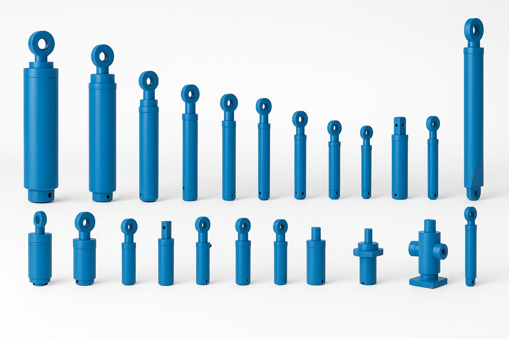
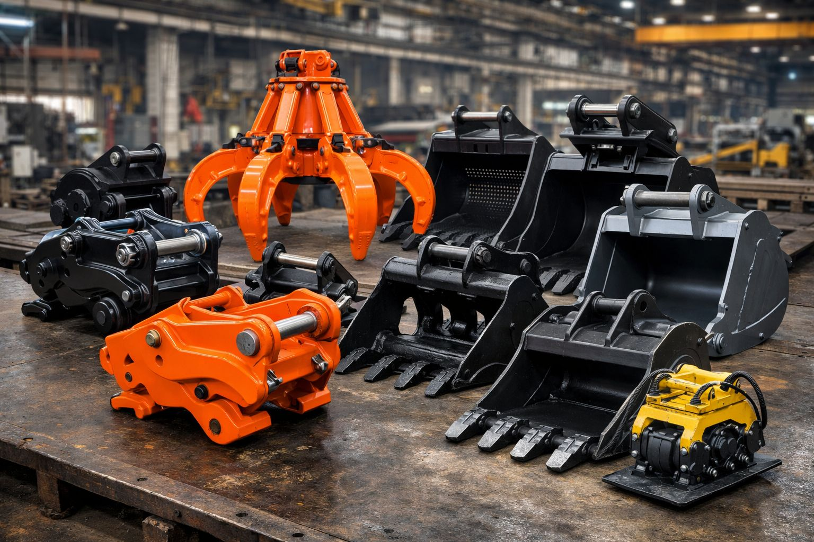
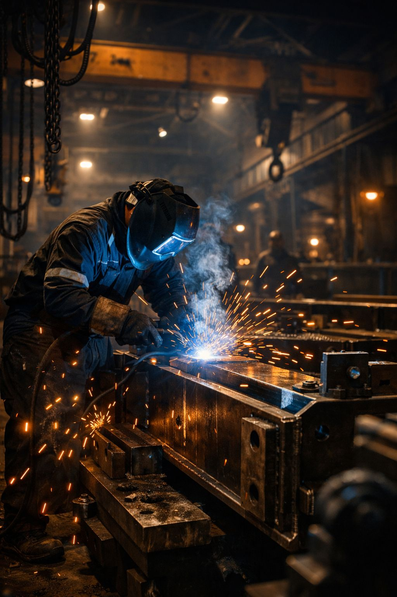

Hydraulic Cylinders
Tie-rod, welded, telescopic, and fully custom cylinders built to withstand extreme conditions and extend service life.
View Hydraulic CylindersWe design, manufacture, and supply durable hydraulic cylinders engineered to deliver maximum strength, efficiency, and reliability for industries worldwide — backed by a full range of excavator attachments, drilling equipment, and contract fabrication services.

With years of expertise in hydraulic engineering, we specialize in manufacturing standard and custom-built hydraulic cylinders that meet the toughest industrial demands.
From precision hydraulics to full contract fabrication, every division shares the same commitment to quality and delivery.
Tie-rod, welded, telescopic, and fully custom cylinders built to withstand extreme conditions and extend service life.
View Hydraulic Cylinders
Quick couplers, grabs, grapples, and buckets engineered for strength across construction, mining, and demolition.
View Attachments
Compressors, hammers, drill rigs, bits, and consumables for construction, mining, and quarrying projects.
View Drilling Solutions
End-to-end heavy metal fabrication — cutting, rolling, welding, machining, and assembly at any production scale.
View Contract ManufacturingIdeal for manufacturing and automation, our tie-rod cylinders offer a standardized design that is easy to maintain and widely compatible with industrial machinery.
Suitable for construction and heavy-duty equipment, welded cylinders deliver a compact, robust construction built for continuous field use.
Common in dump trucks, cranes, and lifting machinery, telescopic cylinders provide long-stroke performance in a compact retracted length.

Designed for performance, efficiency, and longevity, our custom cylinders are engineered around your exact application and duty cycle.
Every hydraulic cylinder undergoes strict inspection and testing for pressure performance, leak-proof operation, and durability under extreme conditions.